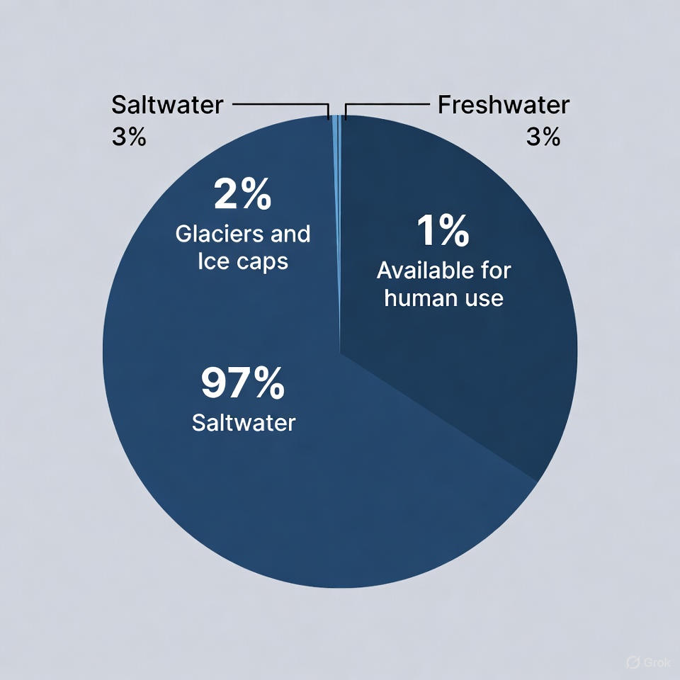

Suvning Inson Hayotidagi Ahamiyati
1.1. Suvning ahamiyati va global taqsimoti
Suv – Yer yuzidagi hayotning asosi, inson xo‘jalik faoliyatining ajralmas elementidir. U nafaqat ichimlik manbai, balki sanoatda xomashyo, energiya manbai, sovutgich, erituvchi sifatida hamda qishloq xo‘jaligida hosildorlikni ta’minlovchi eng muhim resursdir.
Sayyoramiz yuzasining qariyb 71%i suv bilan qoplangan bo‘lsa-da, bu boylikning taqsimoti juda notekisdir. Yerdagi suvning umumiy hajmi taxminan 1,386 million kub kilometrni tashkil etadi, ammo uning asosiy qismi inson iste’moli uchun yaroqsizdir.
- Sho‘r suv: Umumiy suv hajmining 97% dan ortig‘i okean va dengizlardagi sho‘r suvlardir.
- Chuchuk suv: Sayyoramizdagi suvning atigi 3% ga yaqini chuchuk suv hisoblanadi.
- Foydalanish mumkin bo‘lgan chuchuk suv: Bu chuchuk suvning asosiy qismi (taxminan 2%) muzliklarda qulflangan. Insoniyat foydalanishi mumkin bo‘lgan, oson olinadigan chuchuk suv zaxiralari (daryolar, ko‘llar, yer osti suvlari) umumiy suv hajmining 1%idan ham kamroqni tashkil etadi.

1.2. Aholini chuchuk suv bilan ta’minlash muammolari (O‘zbekiston misolida)
- Geografik joylashuv: Mamlakatimiz suv resurslarining qariyb 80%i qo‘shni davlatlar hududida shakllanadigan transchegaraviy daryolar (Amudaryo va Sirdaryo) hissasiga to‘g‘ri keladi.
- Iqlim o‘zgarishi: Global isish natijasida muzliklarning erishi tezlashmoqda, bu esa kelajakda daryolar oqimining 15% gacha kamayishiga olib kelishi mumkin.
- Suvdan samarasiz foydalanish: Qishloq xo‘jaligi mamlakatdagi suv iste’molining qariyb 90%ini tashkil etadi. Eskirgan irrigatsiya tizimlari tufayli suvning katta qismi dalalarga yetib bormasdan yo‘qoladi.
- Aholi o‘sishi: Aholi sonining ortishi jon boshiga to‘g‘ri keladigan suv miqdorining kamayishiga olib kelmoqda.
Ushbu omillar birgalikda Orol dengizi fojiasi kabi ekologik halokatlarga sabab bo‘lib, aholi salomatligi, iqtisodiyot va oziq-ovqat xavfsizligiga jiddiy tahdid solmoqda.
1.3. Ichki suv resurslarini ifloslanishining asosiy manbalari
- Nuqtaviy manbalar: Ifloslanish aniq bir joydan kelib chiqadi. Bunga quyidagilar kiradi:
- Sanoat oqovalari: Zavod va fabrikalardan chiqadigan, tarkibida og‘ir metallar, zaharli kimyoviy moddalar bo‘lgan tozalanmagan suvlar.
- Maishiy oqova suvlar (kanalizatsiya): Aholi punktlaridan chiqadigan, tarkibida organik moddalar va kasallik qo‘zg‘atuvchi mikroorganizmlar bo‘lgan suvlar.
- Tarqoq (diffuz) manbalar: Ifloslanish keng maydondan yig‘ilib keladi va aniq manbasini topish qiyin. Bunga quyidagilar kiradi:
- Qishloq xo‘jaligi oqovalari: Dalalardan yomg‘ir suvlari bilan yuvilib tushadigan mineral o‘g‘itlar (nitratlar, fosfatlar) va pestitsidlar.
- Shahar oqovalari: Shahar ko‘chalari va avtomobil yo‘llaridan yuvilib tushadigan neft mahsulotlari, tuzlar va boshqa kimyoviy moddalar.